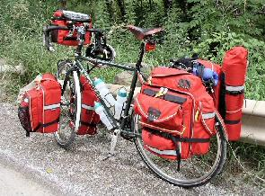

Touring
Loaded touring
 Distances vary considerably. Depending on fitness, speed and the number of stops, the rider usually covers between 50–150 kilometres (30–90 mi) per day. A short tour over a few days may cover as little as 200 kilometres (120 mi) and a long tour may go right across a country or around the world.
A loaded touring bicycle, with drop bars, 700c wheels, racks panniers and bar bag. There are many different types of bicycle touring:
Distances vary considerably. Depending on fitness, speed and the number of stops, the rider usually covers between 50–150 kilometres (30–90 mi) per day. A short tour over a few days may cover as little as 200 kilometres (120 mi) and a long tour may go right across a country or around the world.
A loaded touring bicycle, with drop bars, 700c wheels, racks panniers and bar bag. There are many different types of bicycle touring:
Light weight touring
Informally called credit-card touring, a rider carries a minimum of equipment and a lot of money. Overnight accommodation is in youth hostels, hotels, pensions or B&Bs. Food is bought at cafes, restaurants or markets.
Fully Loaded touring
Also known as self-supported touring, cyclists carry everything they need, including food, cooking equipment, and a tent for camping. Some cyclists minimize their load, carrying only basic supplies, food, and a Bivouac sack or lightweight tent.
Expedition touring
.jpg) Cyclists travel extensively, often through developing nations or remote areas. The bicycle is loaded with food , spares, tools, and camping equipment so that the traveller is largely self-supporting.
Cyclists travel extensively, often through developing nations or remote areas. The bicycle is loaded with food , spares, tools, and camping equipment so that the traveller is largely self-supporting.
Mixed Terrain Cycle-Touring
 Also called rough riding, cyclists travel over a variety of surfaces and topography on a single route, with a single bicycle. Focusing on freedom of travel and efficiency over varied surfaces, cyclists often adopt an ultralight camping approach and carry their own minimal gear.
Also called rough riding, cyclists travel over a variety of surfaces and topography on a single route, with a single bicycle. Focusing on freedom of travel and efficiency over varied surfaces, cyclists often adopt an ultralight camping approach and carry their own minimal gear.
Supported Touring
Cyclists are supported by a motor vehicle, which carries most equipment. This can be organized independently by groups of cyclists or commercial holiday companies. These companies sell places on guided tours, including booked lodging, luggage transfers, route planning and often meals and rental bikes.
S24O - Sub-24hour-Overnight
.jpg) The Sub-24hour-Overnight is focussed less on the cycling and more on the camping. Typically, one would depart on their bicycle in the late afternoon or evening, ride to a campsite in a few hours, camp, sleep, and ride home the next morning. The beauty of this is that it requires very little planning or time commitment. If one lives in a large urban metropolis, this sort of trip might also be extended, taking a train or coach to get to a more convenient starting point, and may in fact take a lot longer than 24 hours, making it a weekend tour, but it otherwise still works on the same planning principals.
The Sub-24hour-Overnight is focussed less on the cycling and more on the camping. Typically, one would depart on their bicycle in the late afternoon or evening, ride to a campsite in a few hours, camp, sleep, and ride home the next morning. The beauty of this is that it requires very little planning or time commitment. If one lives in a large urban metropolis, this sort of trip might also be extended, taking a train or coach to get to a more convenient starting point, and may in fact take a lot longer than 24 hours, making it a weekend tour, but it otherwise still works on the same planning principals.